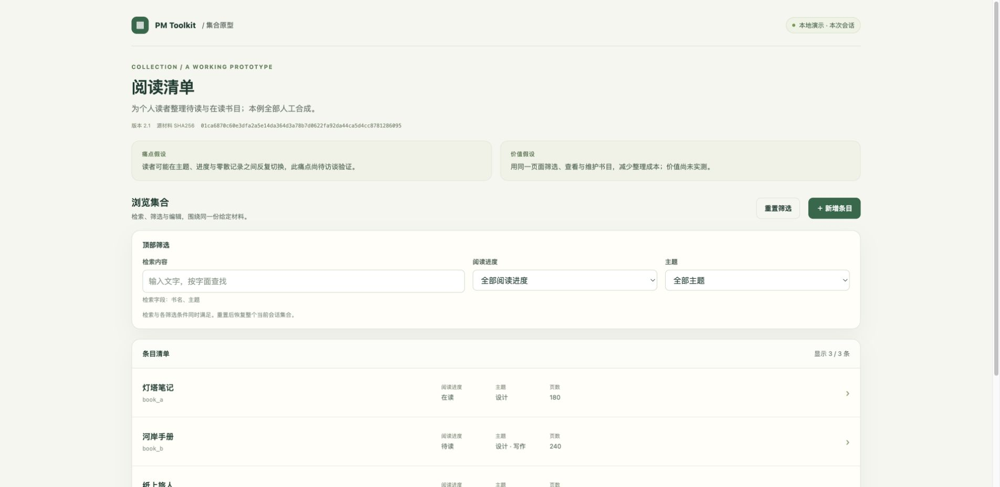

一次筛选与恢复的实际操作
下面三帧来自同一版本阅读清单在 Chrome 中的实际操作。可逐步查看或自动播放；它是制作记录，完整交互请打开原型。
默认显示3条书目，顶部提供进度与主题筛选。

合成材料 · 任务reading_lifecycle 2.1 · 只证明所示操作条件。图片未经拼接模拟，来源标识与本版制品绑定。下面三帧来自同一版本阅读清单在 Chrome 中的实际操作。可逐步查看或自动播放；它是制作记录，完整交互请打开原型。
默认显示3条书目，顶部提供进度与主题筛选。

合成材料 · 任务reading_lifecycle 2.1 · 只证明所示操作条件。图片未经拼接模拟，来源标识与本版制品绑定。